본 포스트는 Youngwoon Lee 교수님의 Deep Reinforcement Learning 강의 자료 중 Lecture 02-2 — Policy gradients (총 20장)를 바탕으로, 강의를 처음 듣는 독자도 논리적 흐름을 따라갈 수 있도록 재구성한 것입니다. 원본 슬라이드는 영문으로 작성되어 있으며, 본문의 대섹션은 슬라이드 제목을 그대로 차용하되 같은 제목이 연달아 나오는 슬라이드는 하나로 묶었습니다. 반복해서 등장하는 Plan for today 슬라이드(reinforcement learning recap → policy gradients → why variance matters in policy gradients?)는 목차 역할만 하므로 별도 섹션으로 두지 않았습니다. 앞부분의 강화학습 복습(3–5쪽)은 앞 회차 02. Reinforcement Learning Basics 포스트와 내용이 겹치지만, 이번 유도 전체가 “MDP를 이루는 여러 항 중 오직 정책만이 학습 대상”이라는 사실 위에 서 있으므로 생략하지 않고 짚고 넘어갑니다.
한 줄 요약 (TL;DR)
“정책의 성능을 궤적 분포 위의 기댓값으로 적고 나면, 로그 미분 항등식 한 줄로 ’보상의 미분’을 ’정책의 미분’으로 바꿀 수 있습니다.”
지난 회차는 강화학습을 누적 보상 \(\sum_t r_t\)를 최대화하는 정책 \(\pi(\mathbf{a}_t \mid \mathbf{s}_t)\)를 찾는 문제로 정의했습니다. 이번 회차는 그 정책에 파라미터 \(\theta\)를 붙여 경사 상승법(gradient ascent)으로 직접 최적화합니다. 걸림돌은 두 가지입니다 — 목적함수 \(J(\theta) = \mathbb{E}_{\tau \sim \pi_\theta(\tau)}[r(\tau)]\)의 기댓값이 \(\theta\)에 의존하는 분포에 대해 취해져 있고, 그 분포 안에는 우리가 알 수 없는 전이 확률이 들어 있습니다. 해결은 두 걸음입니다. 기댓값을 적분으로 되돌린 뒤 로그 미분 항등식 \(\nabla p = p \, \nabla \log p\)로 미분을 분포 안쪽으로 밀어 넣고, \(\log \pi_\theta(\tau)\)를 전개하면 \(\theta\)와 무관한 항 — 초기 상태 분포와 전이 확률 — 이 모두 소거되어 정책의 로그 확률만 남습니다. 그렇게 얻은 \(\nabla_\theta J(\theta) = \mathbb{E}\big[\big(\sum_t \nabla_\theta \log \pi_\theta(\mathbf{a}_t \mid \mathbf{s}_t)\big) r(\tau)\big]\)를 표본평균으로 근사해 그대로 경사 상승하면 그것이 REINFORCE입니다. 다만 이 추정량은 참 목적함수에 대한 정직한 경사인 대신 분산이 크고 온폴리시(on-policy) 데이터만 쓸 수 있다는 두 약점을 안습니다. 강의는 마지막에 그 처방으로 표본 수 \(N\)을 키우는 길과 저분산 추정량을 쓰는 길을 대비시킨 뒤, 후자의 사다리(보상의 합 → 남은 보상 → \(Q\) → 이점)를 펼쳐 보이며 다음 회차의 actor-critic을 예고합니다.
1. 기본 용어 (Basic Terminologies)
강의는 지난 회차의 마지막 슬라이드를 그대로 다시 꺼내며 시작합니다. 매 타임스텝 \(t = 0, 1, 2, \ldots\)에서 벌어지는 일은 다음과 같습니다.
- 세계(world) \(P(\mathbf{s}_{t+1} \mid \mathbf{s}_t, \mathbf{a}_t)\)가 다음 상태를 만들어 내고,
- 지각(perception)을 거쳐 상태(state) \(\mathbf{s}_t\)가 얻어지며,
- 정책(policy) \(\pi(\mathbf{a}_t \mid \mathbf{s}_t)\)가 행동(action) \(\mathbf{a}_t\)를 내놓고,
- 그 행동이 다시 세계로 되돌아갑니다.
이 순환이 남기는 기록이 궤적(trajectory) \(\tau = (\mathbf{s}_0, \mathbf{a}_0, \mathbf{s}_1, \mathbf{a}_1, \ldots, \mathbf{s}_T)\)이며, 정책 롤아웃(policy roll-out) 또는 에피소드(episode)라고도 부릅니다.
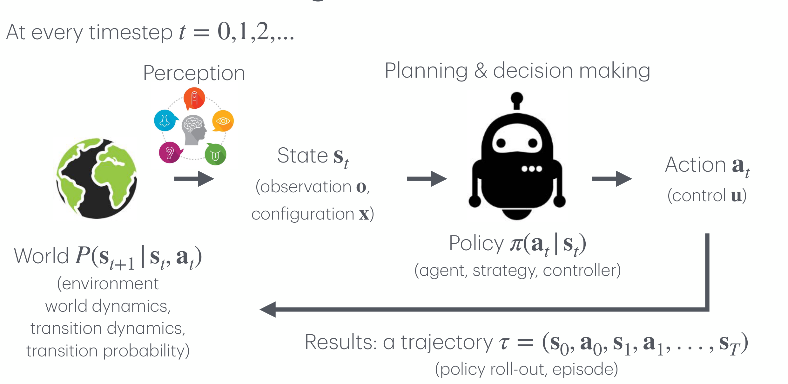
2. 강화학습 (Reinforcement Learning)
2.1 MDP는 환경과 과제를 통째로 정의한다
지난 회차에서 조립한 마르코프 결정 과정(Markov decision process, MDP)에 대해 강의는 두 문장을 다시 강조합니다.
- MDP는 환경 + 과제(environment + task)를 완전히 정의합니다. 환경의 물리(전이 확률)뿐 아니라 “무엇을 잘한 것으로 칠 것인가”(보상 함수)까지 MDP 안에 들어 있습니다.
- MDP는 오직 현재 상태에만 의존합니다 — 역사(history)에는 의존하지 않습니다.
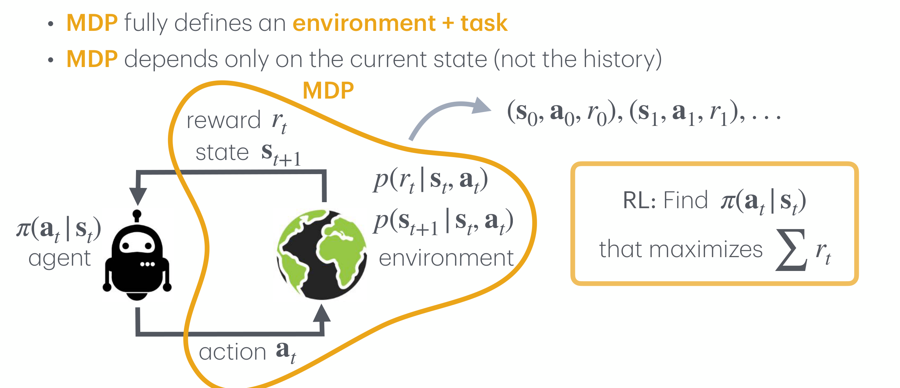
2.2 정책은 에이전트의 행동 방식을 완전히 정의한다
같은 그림에 초록색 타원 하나가 더해지면서, 이번 강의가 다룰 대상이 확정됩니다.
- 정책은 에이전트의 행동 방식(behavior of an agent)을 완전히 정의합니다.
- MDP에서 정책은 오직 현재 상태에만 의존합니다 — 역사에는 의존하지 않습니다.
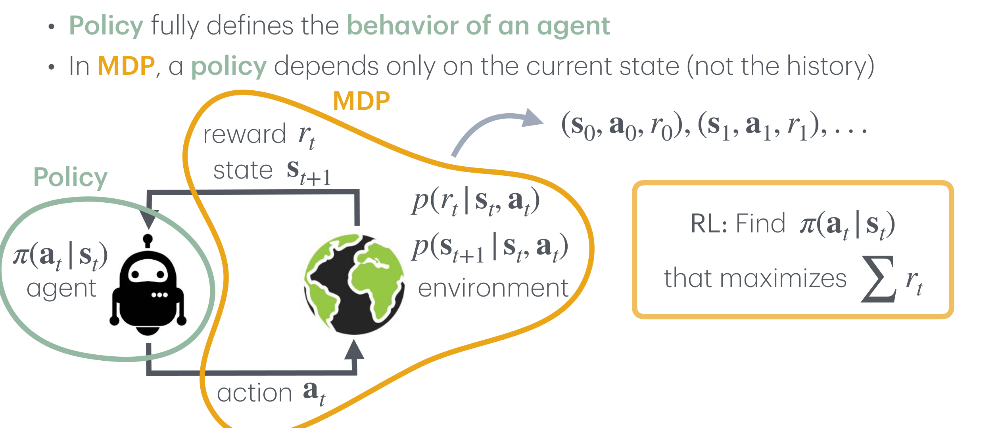
지난 회차의 결론은 두 문장으로 요약됩니다. ① 학습의 대상은 정책 \(\pi\)뿐이다. ② 전이 확률은 주어져 있지만 알 수 없다.
이번 회차의 과제는 이 두 제약을 동시에 만족하는 경사(gradient)를 만들어 내는 것입니다. 즉 \(\theta\)에 대한 미분을 계산하되, 그 계산식 안에 \(p(\mathbf{s}_{t+1} \mid \mathbf{s}_t, \mathbf{a}_t)\)가 등장해서는 안 됩니다. 등장하는 순간 계산할 수 없는 식이 되어 버리기 때문입니다. 이 제약을 기억해 두면 4절의 소거 과정이 왜 결정적인지가 분명해집니다.
3. 강화학습 문제를 지도학습처럼 풀 수 있을까 (Solve RL Problems like SL Problems?)
3.1 지도학습의 빈칸을 채워 보면
강화학습 문제를 지도학습의 익숙한 틀에 하나씩 얹어 보면 다음과 같습니다.
| 지도학습의 구성 요소 | 강화학습에서 대응되는 것 |
|---|---|
| 목표(Goal) | \(\pi(\mathbf{a}_t \mid \mathbf{s}_t)\) 중 \(\sum r_t\)를 최대화하는 것을 찾기 |
| 모형(Model) | 파라미터 \(\theta\)를 갖는 \(\pi_\theta(\mathbf{a}_t \mid \mathbf{s}_t)\) |
| 입력(Input) | 상태 \(\mathbf{s}_t\) |
| 출력(Output) | 행동 \(\mathbf{a}_t\) |
| 데이터(Data) | \(\mathcal{D} = \{(\mathbf{s}_0, \mathbf{a}_0, r_0), (\mathbf{s}_1, \mathbf{a}_1, r_1), \ldots\}\) |
| 손실(Loss) | ? |
| 경사(Gradients) | \(\nabla_\theta \pi_\theta\) — ? |
목표부터 데이터까지 다섯 칸은 어렵지 않게 채워집니다. 모형은 신경망이면 되고, 입력은 상태, 출력은 행동, 데이터는 롤아웃이 남긴 삼중항의 나열입니다. 그런데 마지막 두 칸에서 막힙니다. 강의가 던지는 질문이 바로 그것입니다 — “\(\pi_\theta\)에 대한 경사를 어디서 얻을 것인가?”
- 지도학습에서 손실은 정답 레이블과 예측의 차이로 정의됩니다. 그러나 강화학습에는 “이 상태에서 취했어야 할 정답 행동”이 주어지지 않습니다.
- 우리가 가진 것은 레이블이 아니라 사후에 도착하는 스칼라 보상뿐이고, 그 보상은 개별 행동이 아니라 정책이 스스로 만들어 낸 궤적 전체에 대해 매겨집니다.
- 게다가 그 보상을 만들어 내는 함수 \(r\)과 전이 확률 \(p\)는 미분할 수 없는 블랙박스입니다. 지난 회차의 표현대로
env.step(a)안을 들여다볼 수 없습니다.
즉 손실함수는 주어지는 것이 아니라 우리가 직접 지어내야 하는 것이며, 이 절 이후의 모든 유도는 그 손실(정확히는 목적함수)을 미분 가능한 형태로 빚어내는 과정입니다.
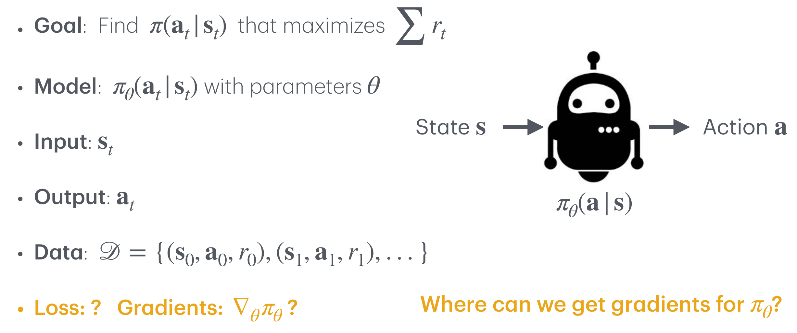
3.2 목적함수를 궤적 분포 위의 기댓값으로 쓰기
빈칸을 채우려면 먼저 “정책이 좋다”는 말을 수식으로 못 박아야 합니다. 문제는 같은 정책이라도 실행할 때마다 다른 궤적이 나온다는 점입니다 — 초기 상태가 뽑히는 방식도, 정책이 행동을 뽑는 방식도, 환경이 다음 상태를 주는 방식도 모두 확률적입니다. 따라서 정책의 성능은 하나의 궤적이 아니라 궤적들의 분포에 대한 평균으로만 정의될 수 있습니다.
정책 \(\pi_\theta\) 아래에서 궤적 \(\tau = (\mathbf{s}_1, \mathbf{a}_1, \ldots, \mathbf{s}_T, \mathbf{a}_T, \mathbf{s}_{T+1})\)이 나타날 확률은 다음과 같습니다.
\[ p(\tau \mid \pi_\theta) = \underbrace{p(\mathbf{s}_1)}_{\text{given}} \prod_{t=1}^{T} \underbrace{\pi_\theta(\mathbf{a}_t \mid \mathbf{s}_t)}_{\text{learned}} \; \underbrace{p(\mathbf{s}_{t+1} \mid \mathbf{s}_t, \mathbf{a}_t)}_{\text{given}} \]
표기를 줄이기 위해 \(\pi_\theta(\tau) := p(\tau \mid \pi_\theta)\)로 씁니다. 그러면 강화학습의 목표는 다음 목적함수(objective) \(J(\theta)\)를 최대화하는 파라미터를 찾는 문제가 됩니다.
\[ \theta^* = \arg\max_\theta \underbrace{\mathbb{E}_{\tau \sim \pi_\theta(\tau)} \sum_t r(\mathbf{s}_t, \mathbf{a}_t)}_{J(\theta)} \]
궤적 확률 분해의 단계별 유도
식이 결과만 제시되어 있으니 가정 → 정의 → 중간 단계 → 최종식의 흐름으로 풀어 보겠습니다.
1단계 (연쇄 법칙). 결합 확률을 시간 순서대로 조건부 확률의 곱으로 분해합니다. 어떤 확률변수 열에 대해서도 성립하는 항등식입니다.
\[ p(\tau) = p(\mathbf{s}_1) \, p(\mathbf{a}_1 \mid \mathbf{s}_1) \, p(\mathbf{s}_2 \mid \mathbf{s}_1, \mathbf{a}_1) \, p(\mathbf{a}_2 \mid \mathbf{s}_1, \mathbf{a}_1, \mathbf{s}_2) \cdots \]
2단계 (정책의 마르코프성). MDP에서 정책은 역사가 아니라 현재 상태에만 의존하므로(2.2절), 행동을 뽑는 항이 단순해집니다.
\[ p(\mathbf{a}_t \mid \mathbf{s}_1, \mathbf{a}_1, \ldots, \mathbf{s}_t) = \pi_\theta(\mathbf{a}_t \mid \mathbf{s}_t) \]
3단계 (환경의 마르코프성). 마찬가지로 전이 확률도 직전 상태–행동 쌍에만 의존합니다.
\[ p(\mathbf{s}_{t+1} \mid \mathbf{s}_1, \mathbf{a}_1, \ldots, \mathbf{s}_t, \mathbf{a}_t) = p(\mathbf{s}_{t+1} \mid \mathbf{s}_t, \mathbf{a}_t) \]
4단계 (최종식). 2·3단계를 1단계에 대입하고 \(t = 1\)부터 \(T\)까지 묶으면 위 정의의 곱 형태가 나옵니다. \(\blacksquare\)
이 분해에서 세 항의 성격이 다르다는 점이 이번 강의의 전부라 해도 과언이 아닙니다.
- \(p(\mathbf{s}_1)\) — 주어진 것(given). 초기 상태 분포는 환경이 정하며 \(\theta\)와 무관합니다.
- \(\pi_\theta(\mathbf{a}_t \mid \mathbf{s}_t)\) — 학습되는 것(learned). 우리가 손댈 수 있는 유일한 항입니다.
- \(p(\mathbf{s}_{t+1} \mid \mathbf{s}_t, \mathbf{a}_t)\) — 주어진 것(given). 존재하지만 형태를 알 수 없고, 역시 \(\theta\)와 무관합니다.
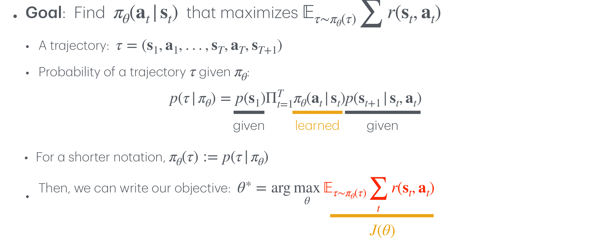
1절의 복습 슬라이드는 궤적을 \(\tau = (\mathbf{s}_0, \mathbf{a}_0, \ldots, \mathbf{s}_T)\)로, 즉 \(t = 0\)에서 시작하는 것으로 적었습니다. 반면 이 절부터의 유도는 \(\tau = (\mathbf{s}_1, \mathbf{a}_1, \ldots, \mathbf{s}_T, \mathbf{a}_T, \mathbf{s}_{T+1})\)로 \(t = 1\)에서 시작합니다. 강의 자료 안에서 두 관습이 함께 쓰이고 있는데, 본질적인 차이는 없고 합의 첨자 범위만 달라집니다. 본 포스트는 유도가 시작되는 이 절부터 원본 슬라이드를 따라 \(t = 1, \ldots, T\) 표기를 사용합니다.
같은 맥락에서, 표본 궤적의 첨자도 슬라이드마다 \(\mathbf{a}_{i,t}\)와 \(\mathbf{a}_t^i\) 두 형태가 섞여 있습니다. 둘 다 \(i\)번째 표본 궤적의 \(t\)번째 행동을 뜻하며, 본 포스트는 더 자주 등장하는 위첨자 형태 \(\mathbf{a}_t^i\)로 통일합니다.
4. 직접 정책 미분 (Direct Policy Differentiation)
목적함수를 적었으니 이제 미분할 차례입니다. 그런데 \(J(\theta)\)를 그냥 바라보면 미분할 방법이 보이지 않습니다. 기댓값 기호 안쪽의 \(r(\mathbf{s}_t, \mathbf{a}_t)\)는 \(\theta\)를 포함하지 않고, \(\theta\)는 오직 기댓값을 취하는 분포의 아래첨자에만 숨어 있기 때문입니다.
4.1 기댓값을 적분으로 되돌리기
강의의 첫 수는 기댓값의 정의로 돌아가는 것입니다. 임의의 분포 \(p(x)\)와 함수 \(f(x)\)에 대해
\[ \mathbb{E}_{x \sim p(x)} f(x) = \int p(x) f(x) \, dx \]
가 성립합니다. 이 정의를 목적함수에 적용하고, 궤적 전체의 보상 합을 \(r(\tau) = \sum_{t=1}^T r(\mathbf{s}_t, \mathbf{a}_t)\)로 줄여 쓰면 다음과 같습니다.
\[ J(\theta) = \mathbb{E}_{\tau \sim \pi_\theta(\tau)} \sum_t r(\mathbf{s}_t, \mathbf{a}_t) = \mathbb{E}_{\tau \sim \pi_\theta(\tau)} \, r(\tau) = \int \pi_\theta(\tau) \, r(\tau) \, d\tau \]
형태만 바뀌었을 뿐인데 상황이 달라집니다. 강의가 두 개의 주황색 화살표로 짚는 대비가 바로 이것입니다.
- 첫 줄의 기댓값 형태 \(\mathbb{E}_{\tau \sim \pi_\theta(\tau)}[\cdot]\) — \(\theta\)에 대한 미분을 어떻게 해야 할지 모릅니다. 미분해야 할 대상이 기호 아래에 숨어 있기 때문입니다.
- 마지막 줄의 적분 형태 \(\int \pi_\theta(\tau) r(\tau) d\tau\) — \(\theta\)에 대한 미분을 압니다. \(\theta\)가 피적분함수 안의 \(\pi_\theta(\tau)\)라는 명시적인 인수로 드러났기 때문입니다.
4.2 로그 미분 항등식 (Log-Derivative Trick)
이제 미분합니다. 적분 기호와 미분 기호를 교환하고(\(r(\tau)\)는 \(\theta\)와 무관하므로 그대로 통과합니다),
\[ \nabla_\theta J(\theta) = \int \nabla_\theta \pi_\theta(\tau) \, r(\tau) \, d\tau \]
를 얻습니다. 그런데 이 식은 아직 쓸 수 없습니다. \(\nabla_\theta \pi_\theta(\tau)\)는 확률분포가 아니므로, 표본을 뽑아 평균 내는 방식으로 근사할 수가 없기 때문입니다. 여기서 강의는 한 줄짜리 항등식을 꺼냅니다.
\[ \nabla p(x) = p(x) \frac{\nabla p(x)}{p(x)} = p(x) \, \nabla \log p(x) \]
- 가운데 등식은 \(p(x)\)를 곱하고 나누었을 뿐인 항등 변형입니다.
- 오른쪽 등식은 로그의 연쇄 법칙 \(\nabla \log p(x) = \nabla p(x) / p(x)\)를 거꾸로 읽은 것입니다.
이것을 \(p \to \pi_\theta(\tau)\)로 대입하면,
\[ \nabla_\theta J(\theta) = \int \pi_\theta(\tau) \, \nabla_\theta \log \pi_\theta(\tau) \, r(\tau) \, d\tau \]
이고, 다시 기댓값의 정의를 반대 방향으로 적용하면 최종식이 나옵니다.
\[ \nabla_\theta J(\theta) = \mathbb{E}_{\tau \sim \pi_\theta(\tau)} \big[ \nabla_\theta \log \pi_\theta(\tau) \, r(\tau) \big] \]
로그를 씌우기 전의 식 \(\int \nabla_\theta \pi_\theta(\tau) r(\tau) d\tau\)에는 적분 앞에 확률분포가 놓여 있지 않습니다. 표본평균으로 근사하려면 피적분함수가 “어떤 분포 × 어떤 함수”의 꼴이어야 하는데, \(\nabla_\theta \pi_\theta(\tau)\)는 음수가 될 수도 있고 적분해서 1이 되지도 않으므로 분포로 쓸 수 없습니다.
로그 미분 항등식은 그 자리에 \(\pi_\theta(\tau)\)를 되살려 놓습니다. 그 결과 식이 다시 \(\mathbb{E}_{\tau \sim \pi_\theta(\tau)}[\cdot]\)의 꼴이 되고, \(\pi_\theta\)에서 표본을 뽑는 일은 곧 정책을 롤아웃하는 일이므로 우리가 실제로 할 수 있는 작업이 됩니다. 정리하면 이 한 줄의 목적은 “미분을 계산 가능한 기댓값으로 되돌리는 것”입니다.
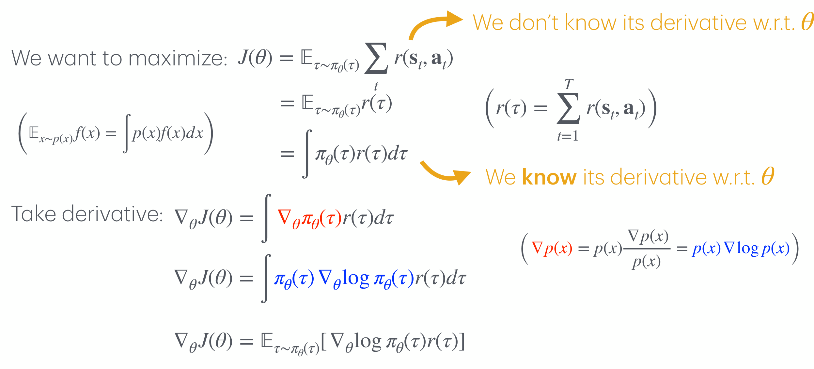
4.3 궤적의 로그 확률을 전개하면 무엇이 남는가
아직 한 가지가 남았습니다. 방금 얻은 식에는 궤적 전체의 로그 확률 \(\nabla_\theta \log \pi_\theta(\tau)\)가 들어 있는데, 3.2절에서 보았듯 \(\pi_\theta(\tau)\)에는 우리가 알 수 없는 전이 확률이 포함되어 있습니다. 그대로라면 계산할 수 없는 식입니다. 그래서 전개해 봅니다.
\[ \pi_\theta(\tau) = p(\mathbf{s}_1) \prod_{t=1}^{T} \pi_\theta(\mathbf{a}_t \mid \mathbf{s}_t) \, p(\mathbf{s}_{t+1} \mid \mathbf{s}_t, \mathbf{a}_t) \]
로그를 취하면 곱이 합으로 풀립니다.
\[ \log \pi_\theta(\tau) = \log p(\mathbf{s}_1) + \sum_{t=1}^{T} \Big[ \log \pi_\theta(\mathbf{a}_t \mid \mathbf{s}_t) + \log p(\mathbf{s}_{t+1} \mid \mathbf{s}_t, \mathbf{a}_t) \Big] \]
이제 \(\theta\)로 미분합니다. \(\theta\)를 포함하지 않는 항의 미분은 0이므로, 첫 항 \(\log p(\mathbf{s}_1)\)과 마지막 항 \(\log p(\mathbf{s}_{t+1} \mid \mathbf{s}_t, \mathbf{a}_t)\)가 통째로 사라집니다.
\[ \nabla_\theta \log \pi_\theta(\tau) = \nabla_\theta \Big[ \underbrace{\log p(\mathbf{s}_1)}_{\theta \text{ 와 무관} \,\to\, 0} + \sum_{t=1}^{T} \log \pi_\theta(\mathbf{a}_t \mid \mathbf{s}_t) + \underbrace{\log p(\mathbf{s}_{t+1} \mid \mathbf{s}_t, \mathbf{a}_t)}_{\theta \text{ 와 무관} \,\to\, 0} \Big] \]
\[ \nabla_\theta \log \pi_\theta(\tau) = \sum_{t=1}^{T} \nabla_\theta \log \pi_\theta(\mathbf{a}_t \mid \mathbf{s}_t) \]
이것을 4.2절의 결과에 대입하면 다음을 얻습니다.
\[ \nabla_\theta J(\theta) = \mathbb{E}_{\tau \sim \pi_\theta(\tau)} \Big[ \Big( \sum_{t=1}^{T} \nabla_\theta \log \pi_\theta(\mathbf{a}_t \mid \mathbf{s}_t) \Big) r(\tau) \Big] \]
강의가 오른쪽에 붙여 놓은 주석이 이 결과를 한마디로 요약합니다 — “궤적 확률의 경사가 아니라 정책의 경사(gradient of a policy, instead of gradient of a trajectory probability)”입니다.
지난 회차에서 강화학습을 어렵게 만드는 첫 번째 사실로 “MDP는 주어져 있지만 알 수 없다”를 배웠습니다. 전이 확률 \(p(\mathbf{s}_{t+1} \mid \mathbf{s}_t, \mathbf{a}_t)\)는 분명히 존재하지만 그 함수를 우리에게 건네주지는 않는다는 것이었지요.
방금의 소거는 그 난점을 정면으로 우회합니다. 최종 경사식에 남은 것은 \(\nabla_\theta \log \pi_\theta(\mathbf{a}_t \mid \mathbf{s}_t)\) — 우리가 직접 설계한 신경망의 로그 확률에 대한 경사 — 와 \(r(\tau)\) — 실행해 보면 관측되는 스칼라 — 뿐입니다. 알 수 없는 항은 하나도 남지 않았습니다.
전이 확률이 사라진 것은 그것이 중요하지 않아서가 아닙니다. 전이 확률은 여전히 어떤 궤적이 얼마나 자주 표본으로 나오는가를 통해 기댓값에 온전히 반영되어 있습니다. 다만 그 영향이 표본을 통해서만 들어오기 때문에, 우리가 그 함수의 형태를 알 필요가 없어진 것입니다.
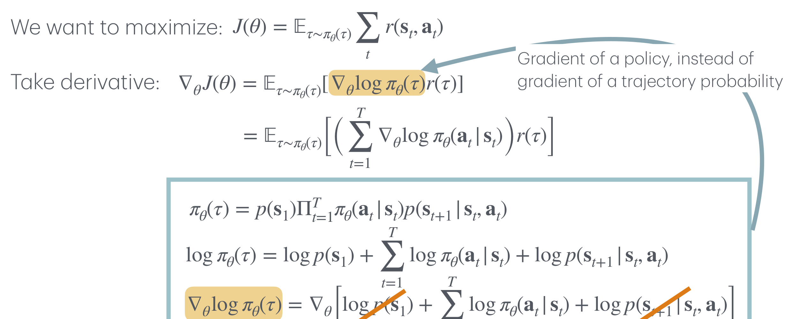
5. 정책 경사 (Policy Gradient)
5.1 표본으로 근사하기
이제 계산 가능한 경사식을 손에 넣었습니다. \(r(\tau)\)를 다시 풀어 쓰면 두 개의 합이 곱해진 형태가 됩니다.
\[ \nabla_\theta J(\theta) = \mathbb{E}_{\tau \sim \pi_\theta(\tau)} \Big[ \Big( \sum_{t=1}^{T} \nabla_\theta \log \pi_\theta(\mathbf{a}_t \mid \mathbf{s}_t) \Big) \Big( \sum_{t=1}^{T} r(\mathbf{s}_t, \mathbf{a}_t) \Big) \Big] \]
기댓값은 여전히 우리가 직접 계산할 수 없습니다 — 가능한 모든 궤적에 대해 적분해야 하기 때문입니다. 그러나 \(\pi_\theta\)에서 표본을 뽑는 일은 할 수 있으므로, 몬테카를로 근사로 대체합니다. 정책을 \(N\)번 롤아웃해 궤적 \(\tau^i\)를 모은 뒤 표본평균을 취하면,
\[ \nabla_\theta J(\theta) \approx \frac{1}{N} \sum_{i=1}^{N} \Big( \sum_{t=1}^{T} \nabla_\theta \log \pi_\theta(\mathbf{a}_t^i \mid \mathbf{s}_t^i) \Big) \Big( \sum_{t=1}^{T} r(\mathbf{s}_t^i, \mathbf{a}_t^i) \Big) \]
가 됩니다. 표본을 뽑는 분포와 기댓값을 취하는 분포가 정확히 같으므로, 이 추정량은 불편(unbiased)입니다 — 즉 무한히 많은 롤아웃을 평균 내면 참 경사에 수렴합니다. 이 성질이 다음 절에서 REINFORCE를 정당화하고, 동시에 9절에서 “불편하지만 분산이 크다”는 진단으로 이어집니다.
5.2 REINFORCE 알고리즘
경사를 얻었으니 남은 일은 그 방향으로 파라미터를 옮기는 것뿐입니다. 목적함수를 최대화하는 문제이므로 경사 하강이 아니라 경사 상승(gradient ascent)을 씁니다.
다음 세 단계를 반복합니다.
- 표본 수집: \(\pi_\theta(\mathbf{a}_t \mid \mathbf{s}_t)\)를 롤아웃해 궤적 집합 \(\{\tau^i\}\)를 모읍니다.
- 경사 추정: \[ \nabla_\theta J(\theta) \approx \frac{1}{N} \sum_{i} \Big( \sum_{t} \nabla_\theta \log \pi_\theta(\mathbf{a}_t^i \mid \mathbf{s}_t^i) \Big) \Big( \sum_{t} r(\mathbf{s}_t^i, \mathbf{a}_t^i) \Big) \]
- 파라미터 갱신: \(\theta' \leftarrow \theta + \alpha \nabla_\theta J(\theta)\)
여기서 \(\alpha\)는 학습률이며, 부호가 \(+\)라는 점이 지도학습의 경사 하강과 다릅니다.
행동 복제(behavioral cloning, 1강)는 전문가 데이터 위에서 로그우도 \(\sum_t \log \pi_\theta(\mathbf{a}_t \mid \mathbf{s}_t)\)를 최대화하는 절차였습니다. REINFORCE의 갱신식은 형태가 그것과 똑같고, 각 궤적 앞에 가중치 \(r(\tau^i)\)가 붙어 있을 뿐입니다.
- \(r(\tau^i)\)가 크면 그 궤적에서 취한 행동들의 로그 확률을 끌어올리는 방향으로 크게 움직이고,
- \(r(\tau^i)\)가 작으면(또는 음수이면) 그 행동들을 덜 하도록 움직입니다.
즉 정책 경사는 “자기가 만들어 낸 데이터를, 그 결과가 좋았던 만큼의 가중치로 모방하는” 지도학습입니다. 전문가가 없으니 잘된 자기 자신을 전문가로 삼는 셈이고, 모방학습이 넘지 못했던 “전문가보다 잘할 수 없다”는 상한이 여기서 사라집니다.
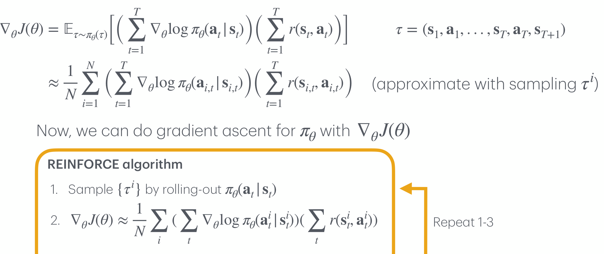
6. REINFORCE
앞 절의 세 단계를 강화학습 알고리즘의 일반적인 해부도 위에 얹으면, REINFORCE가 그 도식의 각 칸을 어떻게 채우는지가 드러납니다. 강의는 세 개의 상자가 순환하는 그림으로 이를 표현합니다.
| 단계 | 일반적인 역할 | REINFORCE가 채우는 방식 |
|---|---|---|
| ① Roll-out policy | 현재 정책으로 환경과 상호작용해 데이터를 모은다 | \(\pi_\theta\)를 \(N\)번 롤아웃해 \((\mathbf{s}_1, \mathbf{a}_1, r_1), (\mathbf{s}_2, \mathbf{a}_2, r_2), \ldots\)를 얻는다 |
| ② Estimate return / Fit model | 모은 데이터로 “이 행동이 얼마나 좋았는가”를 평가한다 | \(r(\tau^i) = \sum_t r_t^i\) — 그 궤적에서 실제로 받은 보상을 그냥 더한다 |
| ③ Improve policy | 평가 결과를 이용해 정책을 개선한다 | \(\nabla_\theta J(\theta) \approx \frac{1}{N} \sum_i \big( \sum_t \nabla_\theta \log \pi_\theta(\mathbf{a}_t^i \mid \mathbf{s}_t^i) \big) r(\tau^i)\) 로 경사 상승한다 |
여기서 ②를 별도의 칸으로 떼어 놓은 구성에 주목할 필요가 있습니다. REINFORCE는 이 칸을 가장 단순한 방식으로 채웁니다 — 그 궤적 하나에서 실제로 받은 보상의 합을 그대로 씁니다. 12절에서 보게 되겠지만, 정책 경사법의 개선은 대부분 ①이나 ③이 아니라 이 ②번 칸을 무엇으로 채울 것인가를 바꾸는 데서 나옵니다.
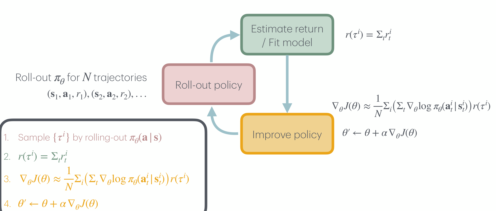
7. 정책 경사법 요약 (Summary of Policy Gradients)
7.1 유도 전체를 한 장으로
여기까지의 논리 사슬을 강의는 네 줄로 압축합니다.
| 단계 | 식 |
|---|---|
| 강화학습의 목표 | \(\Sigma_t r(\mathbf{s}_t, \mathbf{a}_t)\)를 최대화하는 \(\pi_\theta(\mathbf{a}_t \mid \mathbf{s}_t)\) 찾기 |
| 최대화할 대상 | \(J(\theta) = \mathbb{E}_{\tau \sim \pi_\theta(\tau)} \Sigma_t r(\tau)\) |
| 미분 | \(\nabla_\theta J(\theta) = \mathbb{E}_{\tau \sim \pi_\theta(\tau)} \big[ \nabla_\theta \log \pi_\theta(\tau) \, r(\tau) \big]\) |
| 정책 항만 남기기 | \(= \mathbb{E}_{\tau \sim \pi_\theta(\tau)} \big[ \big( \Sigma_{t=1}^{T} \nabla_\theta \log \pi_\theta(\mathbf{a}_t \mid \mathbf{s}_t) \big) r(\tau) \big]\) |
| 표본 근사 | \(\approx \frac{1}{N} \Sigma_{i=1}^{N} \big( \Sigma_{t=1}^{T} \nabla_\theta \log \pi_\theta(\mathbf{a}_t^i \mid \mathbf{s}_t^i) \big) r(\tau^i)\) |
7.2 얻은 것과 잃은 것
강의는 정책 경사법의 성질을 장점 하나와 단점 둘로 정리합니다.
- (+) 참 목적함수에 대한 경사 상승입니다. 대리 목적함수(surrogate objective)를 세워 우회하는 것이 아니라, 우리가 실제로 최대화하고 싶은 \(J(\theta)\)를 직접 밀어 올립니다. 그 작동 방식은 단순합니다 — 높은 보상을 준 행동은 더 자주 하도록(more likely), 낮은 보상을 준 행동은 덜 하도록(less likely) 확률을 옮깁니다.
- (−) 경사의 분산이 큽니다. 표본을 통한 정책 경사 추정에는 큰 분산이 따라붙습니다.
- (−) 온폴리시(on-policy) 데이터를 요구합니다. 유도 자체가 데이터가 현재 정책의 롤아웃에서 온다는 전제 위에 서 있습니다.
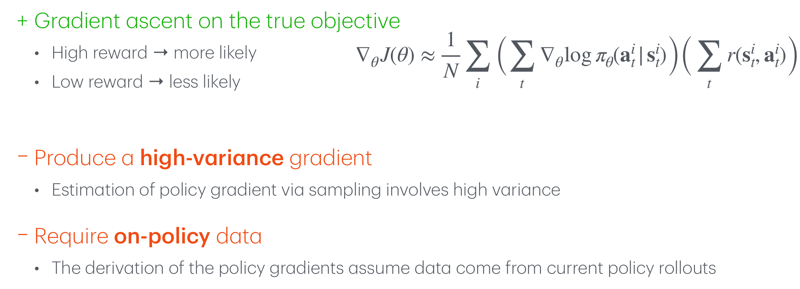
8. 정책 경사법 (Policy Gradient Methods)
강의는 앞 절의 두 단점을 다시 꺼내면서, 이번에는 각 단점이 식의 어느 부분에서 비롯되는지를 색으로 짚습니다.
8.1 고분산은 어디서 오는가
\[ \nabla_\theta J(\theta) \approx \frac{1}{N} \sum_{i} \Big( \sum_{t} \nabla_\theta \log \pi_\theta(\mathbf{a}_t^i \mid \mathbf{s}_t^i) \Big) \Big( \underbrace{\sum_{t} r(\mathbf{s}_t^i, \mathbf{a}_t^i)}_{\text{범인}} \Big) \]
강의가 붉게 강조하는 곳은 오른쪽 괄호, 즉 표본 궤적 하나의 총보상입니다. 이 값은 롤아웃을 다시 할 때마다 달라지는 확률변수이며, 그것이 왼쪽 괄호 전체에 곱해지는 가중치로 쓰입니다.
- 궤적의 총보상은 \(T\)개 보상의 합이므로, 에피소드가 길어질수록 그 변동 폭도 커집니다.
- 그 하나의 스칼라가 궤적 안 모든 타임스텝의 로그 확률 경사에 똑같이 곱해집니다. 궤적 후반의 운 나쁜 사건 하나가 궤적 초반의 좋은 행동까지 함께 벌주는 구조입니다.
8.2 온폴리시 제약은 어디서 오는가
\[ J(\theta) = \mathbb{E}_{\tau \sim \pi_\theta(\tau)} \sum_t r(\mathbf{s}_t, \mathbf{a}_t) \qquad \longleftarrow \; \text{범인은 아래첨자 } \tau \sim \pi_\theta(\tau) \]
이번에 붉게 강조되는 곳은 기댓값의 아래첨자 \(\tau \sim \pi_\theta(\tau)\)입니다. 목적함수의 정의 자체가 “현재 정책 \(\pi_\theta\)가 만들어 내는 궤적 분포에 대한 평균”이므로, 이 기댓값을 표본으로 근사하려면 표본이 반드시 바로 그 \(\pi_\theta\)에서 나와야 합니다.
\(\theta\)를 한 번 갱신하는 순간 정책은 \(\pi_\theta\)에서 \(\pi_{\theta'}\)로 바뀝니다. 그러면 직전에 모은 궤적들은 더 이상 \(\pi_{\theta'}(\tau)\)에서 뽑힌 표본이 아니므로, 다음 갱신에 재사용하면 추정량이 더 이상 불편하지 않게 됩니다.
실질적으로 이는 다음을 뜻합니다.
- 재현 버퍼(replay buffer)를 쓸 수 없습니다. 과거 경험을 쌓아 두고 반복해서 학습하는 전략이 원칙적으로 막힙니다.
- 비싸게 모은 데이터를 한 번 쓰고 버려야 합니다. 실제 로봇처럼 표본 하나의 비용이 큰 환경에서 이 제약은 치명적입니다.
11절에서 보겠지만, 이 제약은 고분산 문제와 서로를 악화시키는 방향으로 얽혀 있습니다.
9. 정책 경사에서 분산은 왜 중요한가 (Why Variance Matters in Policy Gradient?)
두 단점 중 강의가 이번 회차에서 끝까지 파고드는 것은 분산입니다. 참 경사와 추정 경사를 나란히 놓고 보겠습니다.
\[ \nabla_\theta J(\theta) = \mathbb{E}_{\tau \sim \pi_\theta(\tau)} \Big( \sum_{t=1}^{T} \nabla_\theta \log \pi_\theta(\mathbf{a}_t \mid \mathbf{s}_t) \Big) \Big( \sum_{t'=1}^{T} r(\mathbf{s}_{t'}, \mathbf{a}_{t'}) \Big) \quad \text{(원래의 정책 경사)} \]
\[ \approx \frac{1}{N} \sum_{i=1}^{N} \sum_{t=1}^{T} \Big[ \nabla_\theta \log \pi_\theta(\mathbf{a}_t^i \mid \mathbf{s}_t^i) \Big( \sum_{t'=1}^{T} r(\mathbf{s}_{t'}^i, \mathbf{a}_{t'}^i) \Big) \Big] \quad \text{(추정된 정책 경사)} \]
두 번째 식에서 \(t\)에 대한 합이 대괄호 바깥으로 나왔다는 점을 눈여겨봐 두시기 바랍니다. 보상의 첨자가 \(t'\)로 바뀐 것도 같은 이유인데, 이렇게 적어 놓으면 각 타임스텝 \(t\)의 로그 확률 경사에 어떤 가중치가 곱해지고 있는지가 한눈에 보입니다 — 지금은 \(t\)가 무엇이든 상관없이 궤적 전체의 보상 합이라는 똑같은 값이 곱해지고 있습니다. 12절의 첫 번째 개선이 정확히 이 지점을 겨냥합니다.
이 추정량은 5.1절에서 확인했듯 불편합니다. 그런데도 왜 분산이 문제일까요?
- 우리가 실제로 쓰는 것은 기댓값이 아니라 표본평균 \(\bar{X}\) 한 개입니다. 불편성은 “무한히 반복하면 평균적으로 맞다”는 보증일 뿐, 이번 한 번의 갱신이 옳은 방향인지는 보증하지 않습니다.
- 분산이 크면 표본평균이 참값에서 멀리 떨어진 곳에 놓이기 쉽고, 그러면 파라미터가 엉뚱한 방향으로 이동합니다.
- 분산이 작으면 표본평균이 참값 근처에 몰려 있어 추정된 경사가 정확하고, 갱신이 안정적으로 목표를 향합니다.
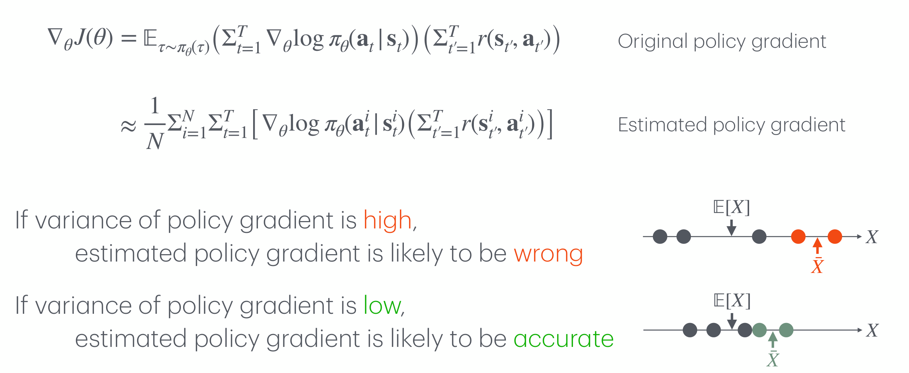
10. 정책 경사의 분산을 어떻게 줄일 것인가 (How to Reduce Variance of Policy Gradient?)
진단이 끝났으니 처방이 남았습니다. 같은 두 식을 다시 펼쳐 놓고, 강의는 두 갈래의 해법을 제시합니다.
- 해법 1: 매우 큰 \(N\)을 쓴다. 표본을 많이 모아 표본평균의 분산을 직접 줄이는, 가장 직접적이고 무식한 방법입니다.
- 해법 2: 정책 경사의 저분산 추정량을 쓴다. 추정량의 형태 자체를 바꿔, 같은 표본 수로도 분산이 작게 나오도록 만드는 방법입니다.
두 해법은 각각 추정 오차를 줄이는 두 가지 서로 다른 손잡이 — 표본 수와 추정량의 설계 — 를 잡고 있습니다. 다음 두 절에서 하나씩 살펴봅니다.
11. 해법 1: 매우 큰 N을 쓴다 (Solution 1: Use Very Large N)
표본평균의 분산이 표본 수에 반비례한다는 것은 통계학의 기본 사실입니다. 독립인 표본 \(N\)개의 평균에 대해
\[ \mathrm{Var}(\bar{X}) = \frac{\mathrm{Var}(X)}{N} \]
이므로, \(N\)을 키우면 분산은 확실히 줄어듭니다. 6절의 순환 도식에서 분홍색 상자(Roll-out policy)를 더 오래 돌리는 것에 해당하며, 알고리즘의 어느 줄도 고칠 필요가 없다는 점에서 가장 손쉬운 처방입니다.
그러나 강의는 이 해법이 바람직하지 않다(not preferable)고 단언하며 두 가지 이유를 듭니다.
- \(N\)개의 롤아웃을 모으는 일 자체가 비쌉니다. 시뮬레이터라면 계산 시간이, 실제 로봇이라면 시간·마모·파손 비용이 그대로 늘어납니다.
- \(N\)개의 롤아웃으로 경사 갱신을 단 한 번밖에 하지 못합니다. 8.2절의 온폴리시 제약 때문입니다 — 한 번 갱신하고 나면 그 데이터는 더 이상 현재 정책의 표본이 아니므로 버려야 합니다.
고분산과 온폴리시는 따로 놓고 보면 각각 하나의 불편함이지만, 함께 놓으면 곱해집니다.
분산을 \(N\)으로 억누르려면 롤아웃을 많이 모아야 하는데, 온폴리시 제약 때문에 그 비싼 데이터는 단 한 번의 갱신에만 쓰이고 폐기됩니다. 즉 표본 효율(sample efficiency)이 가장 나쁜 지점에서 표본을 가장 많이 요구하는 셈입니다.
이 때문에 실용적인 답은 해법 1이 아니라 해법 2가 됩니다. 표본 수를 늘리는 대신 같은 표본에서 더 나은 추정량을 뽑아내는 쪽으로 방향을 트는 것입니다.
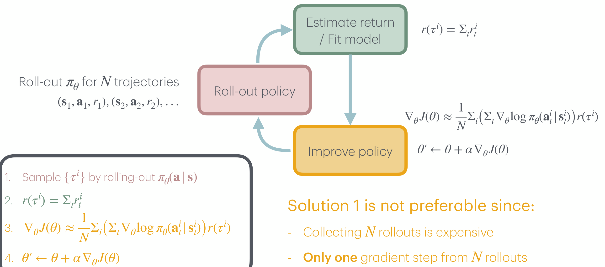
12. 해법 2: 저분산 추정량을 쓴다 (Solution #2: Use Low-Variance Estimator)
12.1 물음표가 놓인 자리
강의는 정책 경사 추정식에서 가중치 부분만 물음표로 비워 놓습니다.
\[ \nabla_\theta J(\theta) \approx \frac{1}{N} \sum_{i=1}^{N} \Big( \sum_{t=1}^{T} \nabla_\theta \log \pi_\theta(\mathbf{a}_t^i \mid \mathbf{s}_t^i) \Big) \big( \, \boldsymbol{?} \, \big) \]
왼쪽 괄호 — 정책의 로그 확률 경사 — 는 4절의 유도가 강제한 것이라 손댈 수 없습니다. 바뀔 수 있는 것은 오른쪽 괄호, 즉 “시각 \(t\)에 취한 행동을 무엇으로 평가할 것인가”뿐입니다. 6절에서 별도의 칸으로 떼어 두었던 “Estimate return” 단계가 바로 이 자리입니다.
12.2 네 가지 채움과 그 의미
강의는 이 자리에 들어갈 수 있는 네 가지를 난이도 순으로 늘어놓습니다.
| 무엇으로 채우는가 | 식 | 그 행동을 무엇으로 평가하는가 |
|---|---|---|
| 보상의 합 (sum of rewards) | \(\Sigma_{t=1}^{T} r(\mathbf{s}_t^i, \mathbf{a}_t^i)\) | 좋은 총(total) 보상으로 이어지는 행동 |
| 남은 보상 (reward to-go) | \(\Sigma_{t'=t}^{T} r(\mathbf{s}_{t'}^i, \mathbf{a}_{t'}^i)\) | 하나의 궤적에서 좋은 미래(future) 보상으로 이어지는 행동 |
| 남은 보상의 더 나은 추정 | \(Q_\phi^{\pi_\theta}(\mathbf{s}_t^i, \mathbf{a}_t^i)\) | 여러 궤적에서 좋은 미래 보상으로 이어지는 행동 |
| 이점 (advantage) | \(A_\phi^{\pi_\theta}(\mathbf{s}_t^i, \mathbf{a}_t^i) = Q_\phi^{\pi_\theta}(\mathbf{s}_t^i, \mathbf{a}_t^i) - V_\phi^{\pi_\theta}(\mathbf{s}_t^i)\) | 더 나은(better) 미래 보상으로 이어지는 행동 |
네 줄은 임의로 나열된 선택지가 아니라, 매 단계마다 시각 \(t\)의 행동과 무관한 잡음을 한 겹씩 걷어 내는 사다리입니다.
- ① 보상의 합 → ② 남은 보상. 첫 번째 항목은 \(t' = 1\)부터 더하므로 시각 \(t\) 이전에 받은 보상까지 가중치에 포함합니다. 그런데 과거의 보상은 지금 행동이 만들어 낸 결과일 수 없습니다. \(t' = t\)부터 더하도록 바꾸면, 그 행동이 실제로 영향을 미칠 수 있는 미래 보상만 남습니다. 9절에서 합의 순서를 바꿔 적어 둔 것이 이 개선을 보이기 위한 준비였습니다.
- ② 남은 보상 → ③ \(Q\). 남은 보상은 여전히 궤적 하나에서 실제로 벌어진 일입니다. 같은 상태에서 같은 행동을 해도 이후 전개는 매번 다르므로, 이 값에는 환경의 우연이 그대로 실려 있습니다. 이를 여러 궤적에 걸쳐 학습한 함수 \(Q_\phi^{\pi_\theta}(\mathbf{s}_t, \mathbf{a}_t)\)로 대체하면 그 우연이 평균되어 사라집니다.
- ③ \(Q\) → ④ 이점. \(Q\)는 “이 상태에서 이 행동을 하면 앞으로 얼마나 좋은가”를 말해 주지만, 그 값의 상당 부분은 행동이 아니라 상태 자체가 좋아서 생긴 것일 수 있습니다. 상태의 평균적인 가치 \(V_\phi^{\pi_\theta}(\mathbf{s}_t)\)를 빼면 남는 것은 “이 상태에서 평균보다 얼마나 나은 행동이었는가”뿐이고, 강의의 표현대로 “더 나은 미래 보상”을 기준으로 행동을 평가하게 됩니다.
세 번째와 네 번째 항목에 등장하는 \(Q_\phi^{\pi_\theta}\)와 \(V_\phi^{\pi_\theta}\)의 표기를 뜯어보면, 위첨자는 어떤 정책 아래에서의 값인가(\(\pi_\theta\))를, 아래첨자는 그 함수 자체의 파라미터(\(\phi\))를 가리킵니다.
\(\phi\)가 새로 등장했다는 것은 곧, 정책 \(\pi_\theta\) 외에 또 하나의 학습되는 함수가 필요해졌다는 뜻입니다. 행동을 고르는 쪽(actor)과 그 행동을 평가하는 쪽(critic)이 각자의 파라미터를 갖고 함께 학습되는 구조 — 이것이 다음 회차의 주제인 actor-critic입니다.
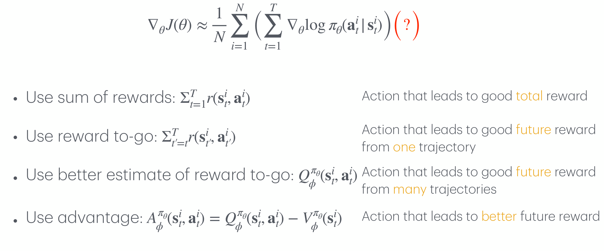
13. 다음 강의 (Next Class)
강의는 다음 주제를 예고하며 마칩니다.
- 행위자–비평가 방법 (actor-critic methods)
- 정책 경사의 분산을 어떻게 줄일 것인가?
이번 회차가 “정책을 어떻게 미분할 것인가”에 답해 REINFORCE라는 작동하는 알고리즘을 손에 쥐여 주었다면, 다음 회차는 그 알고리즘이 실용적이지 못한 이유 — 12절의 물음표 자리에 아직 가장 조악한 추정량이 들어 있다는 사실 — 을 정면으로 다룹니다. \(Q_\phi\)와 \(V_\phi\)를 실제로 어떻게 학습시킬 것인가가 그 답의 내용이 될 것입니다.
정리하며 (Closing Remarks)
이번 강의의 논리 사슬을 한 장으로 요약하면 다음과 같습니다.
| 단계 | 내용 | 근거 |
|---|---|---|
| ① 경계 확인 | MDP가 환경과 과제를 통째로 정의하며, 그중 학습 대상은 정책 \(\pi_\theta\) 하나뿐이다 | 2절 (Reinforcement learning) |
| ② 빈칸 발견 | 목표·모형·입력·출력·데이터는 지도학습처럼 채워지지만 손실과 경사 칸이 비어 있다 | 3.1절 (Solve RL problems like SL problems?) |
| ③ 목적함수 정식화 | 정책의 성능은 궤적 분포 위의 기댓값 \(J(\theta) = \mathbb{E}_{\tau \sim \pi_\theta(\tau)} r(\tau)\)로만 정의된다 | 3.2절 (궤적 분포 \(\pi_\theta(\tau)\)의 분해) |
| ④ 난점 확인 | \(\theta\)가 기댓값을 취하는 분포에 숨어 있어 그대로는 미분할 수 없다 | 4절 도입부 |
| ⑤ 적분으로 되돌리기 | 기댓값의 정의를 써서 \(J(\theta) = \int \pi_\theta(\tau) r(\tau) d\tau\)로 적으면 \(\theta\)가 명시적으로 드러난다 | 4.1절 (Direct policy differentiation) |
| ⑥ 로그 미분 항등식 | \(\nabla p = p \nabla \log p\)로 미분을 분포 안으로 밀어 넣어 다시 기댓값 형태로 되돌린다 | 4.2절 |
| ⑦ 결정적 소거 | \(\log \pi_\theta(\tau)\)를 전개하면 \(p(\mathbf{s}_1)\)과 알 수 없는 전이 확률이 \(\theta\)와 무관하므로 탈락한다 | 4.3절 (모형 없는 학습의 근거) |
| ⑧ 표본 근사 | \(\pi_\theta\)에서 뽑는 일은 곧 롤아웃이므로 표본평균으로 대체할 수 있고, 그 추정량은 불편하다 | 5.1절 |
| ⑨ 알고리즘 완성 | 롤아웃 → 경사 추정 → \(\theta' \leftarrow \theta + \alpha \nabla_\theta J(\theta)\)의 반복이 REINFORCE다 | 5.2절, 6절 |
| ⑩ 대가 정산 | 참 목적함수에 대한 경사 상승을 얻은 대신 고분산과 온폴리시라는 두 약점을 떠안는다 | 7.2절 (Summary of policy gradients) |
| ⑪ 원인 지목 | 고분산은 가중치로 쓰인 궤적 총보상에서, 온폴리시는 기댓값 아래첨자 \(\tau \sim \pi_\theta(\tau)\)에서 온다 | 8절 (Policy gradient methods) |
| ⑫ 분산이 문제인 이유 | 추정량이 불편해도 한 번의 갱신에 쓰이는 표본평균 하나가 빗나가면 파라미터가 엉뚱한 방향으로 간다 | 9절 (Why variance matters) |
| ⑬ 해법 1의 한계 | \(N\)을 키우면 분산은 줄지만 롤아웃 비용이 크고, 온폴리시 탓에 갱신 한 번 뒤 폐기된다 | 11절 (Solution 1) |
| ⑭ 해법 2의 방향 | 가중치 자리를 보상의 합 → 남은 보상 → \(Q_\phi\) → 이점 \(A_\phi\)로 바꿔 잡음을 한 겹씩 걷어 낸다 | 12절 (Solution #2) |
| ⑮ 다음 단계 | 평가자 \(\phi\)가 등장한 이상, 남은 것은 그것을 어떻게 학습시킬 것인가 — actor-critic | 13절 (Next class) |